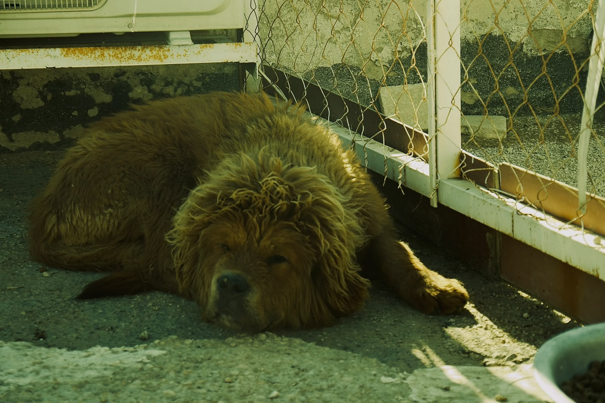
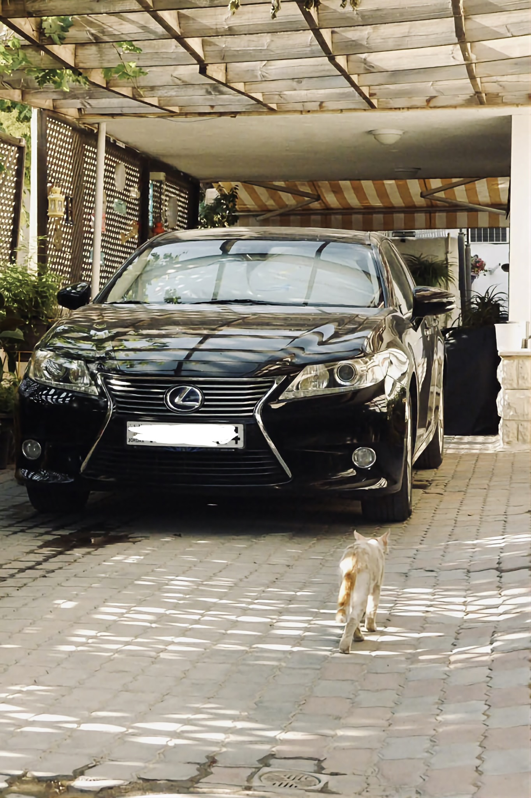
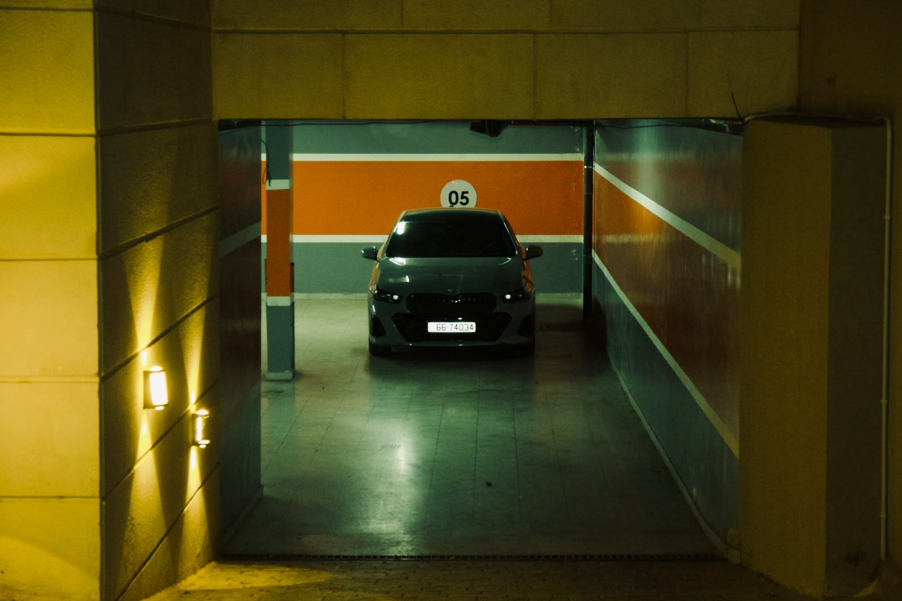

Wildlife

At Rest
WILDLIFE
Peace isn't always found in silence. Sometimes it's hidden in an afternoon nap, waiting for someone to notice.

Rest Between Shadows
WILDLIFE
A Muscovy duck resting beneath scattered sunlight, where quiet moments become unforgettable photographs.
Automotive

Unexpected Company
AUTOMOTIVE • STREET
A quiet driveway, a polished Lexus, and an unexpected visitor. Sometimes the smallest detail transforms an ordinary scene into a story.

The Wait
AUTOMOTIVE • URBAN
Hidden beneath the city lights, the BMW waits in perfect symmetry. Clean geometry and quiet light transform an everyday parking garage into something cinematic.